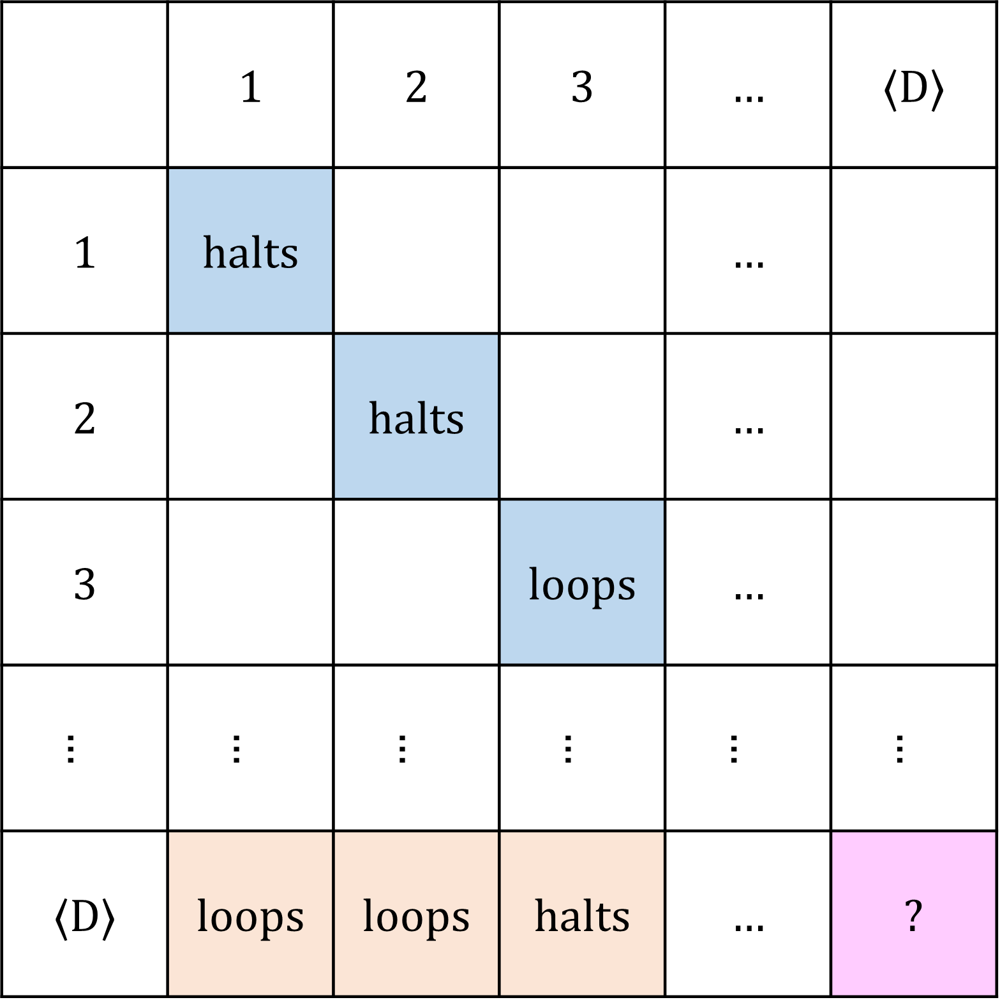

Halting Problem
题意
令 ⟨⋅⟩ 是一个从图灵机到自然数的双射。是否存在一个图灵机 H(⋅,⋅) 使得：
H(⟨M⟩,x){→0→1(M(x) does not halt)(M(x) halts)?
（其中 → 表示图灵机的输出）即 H 判定（decide）一个图灵机关于一个输入是否停机。注意根据定义，H 始终停机。
题解/证明
题解
不存在。
证明
假设存在这样的 H(⋅)，定义 D(⋅) 如下：
-
令 x∈N 为输入，计算 y←H(x,x)（注意 H 始终停机，且 y∈{0,1}）。
-
若 y=0，则立刻停机；
-
若 y=1，则进入一个无限循环。
考虑 D(⟨D⟩)：
-
若 D(⟨D⟩) 停机，则 H(⟨D⟩,⟨D⟩)=1，根据 D 的定义导出 D(⟨D⟩) 不停机，矛盾；
-
若 D(⟨D⟩) 不停机，则 H(⟨D⟩,⟨D⟩)=0，根据 D 的定义导出 D(⟨D⟩) 停机，矛盾。
因此不存在这样的 H(⋅)。
这种证明方法被称为对角线法（diagonalization）。考虑一个无限大二维网格，(⟨x⟩,⟨y⟩) 格显示了 x(⟨y⟩) 是否停机。⟨D⟩ 这一行即将对角线相应元素取反得到，因此在 D(⟨D⟩) 这一格得到矛盾。
